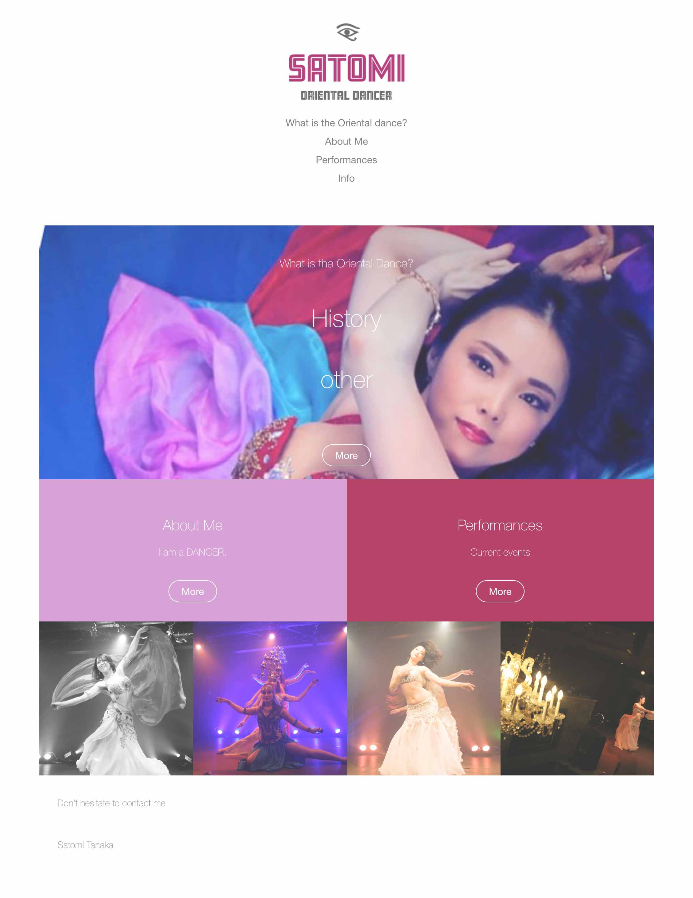
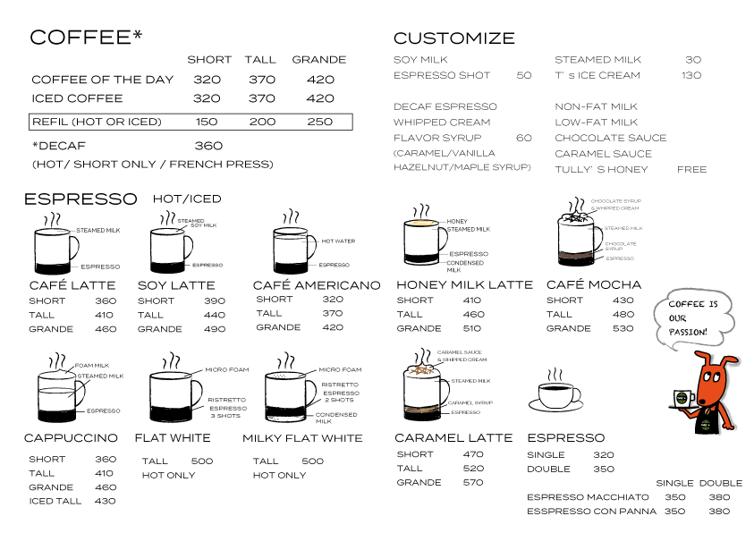
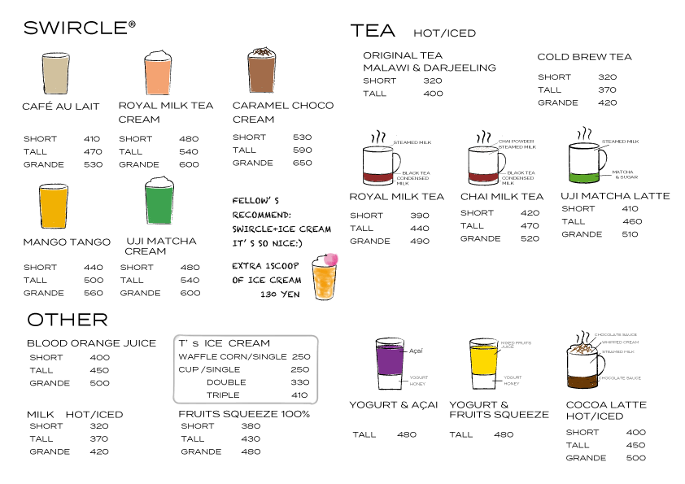
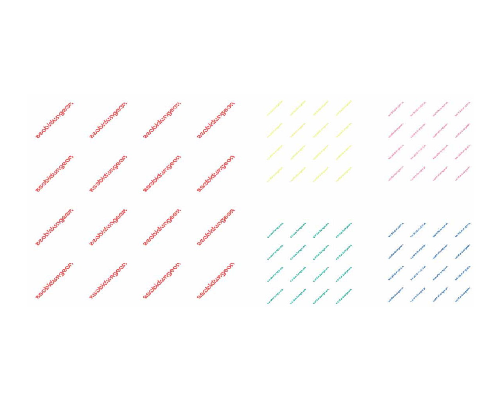
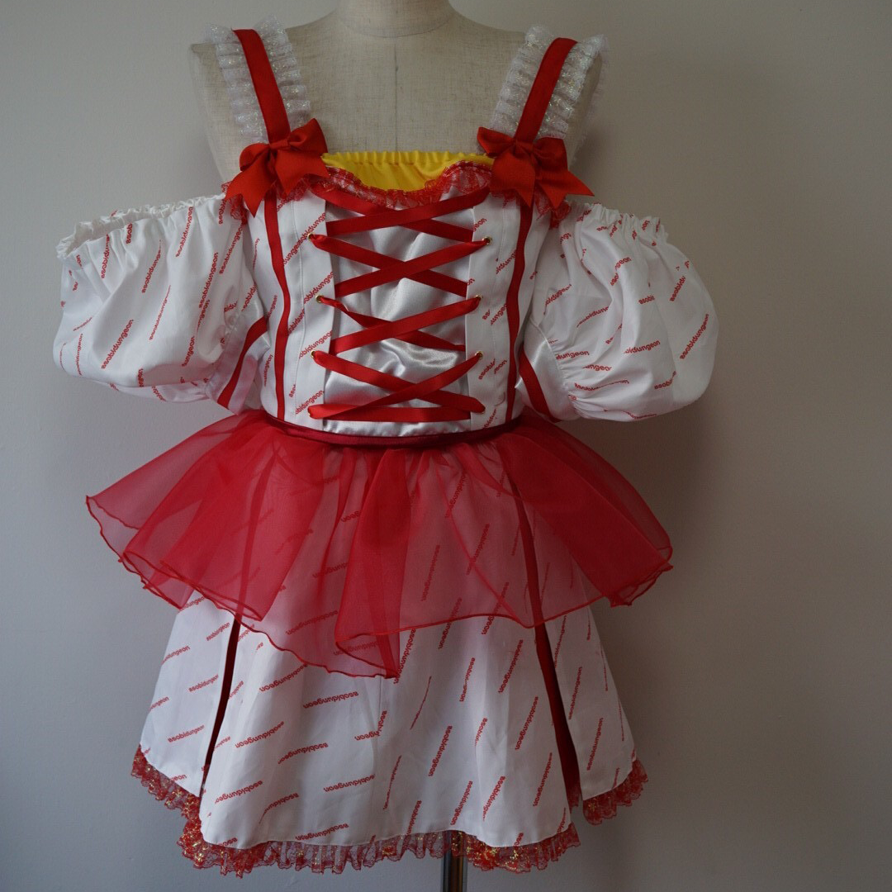

ClickThis is the Oriental Dancer's website.
Creation Time: 3days
Tools: HTML, CSS, Illustrator, and Photoshop
Concept:"Simple & Elegant"


Creation Time: 3days
Tools: Illustrator
Concept: "Simple & Clean"
In this cafe, many tourists and business people visit from abroad. And they don't have any English menu and Japanese one is messy for foreigners. So I made it simple and designed pictures to easy to recognize what is inside (Allergens etc) every drinks. And it makes staffs to explain about their products to customers.


Creation Time: 2days
Tools: Photoshop
Arranged the logo to the pattern for original costumes.
I made this website not only simple but also elegant. Because "Bellydance is a kind of "Sexy" so I think it should be "Elegant". And Visitors are mostly women, so I modified this website for them.